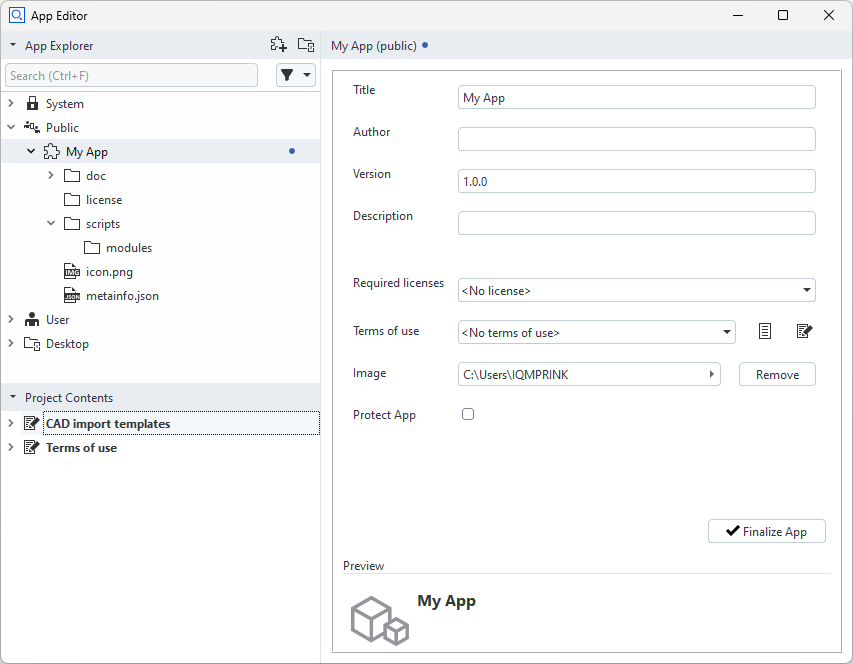
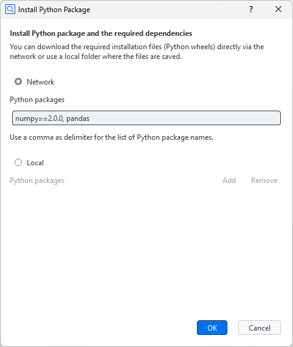
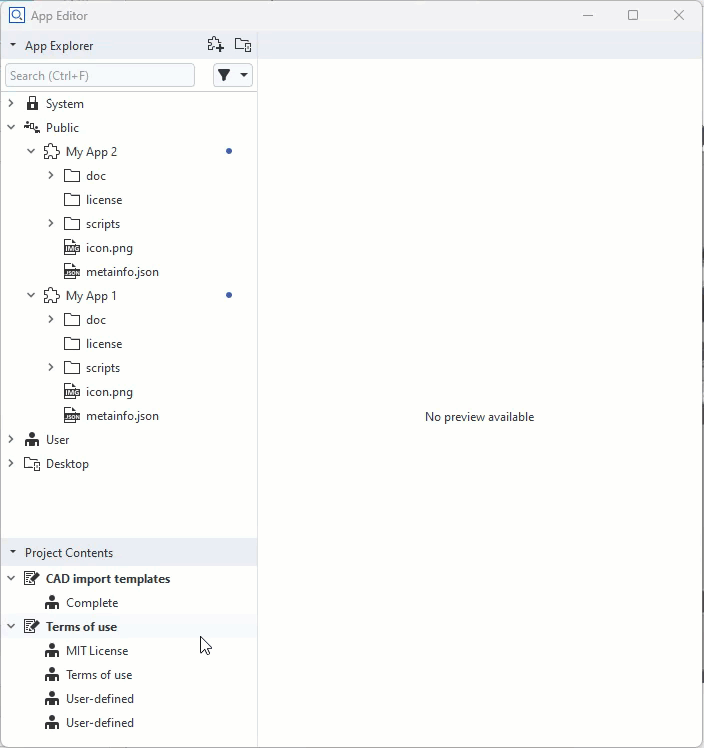
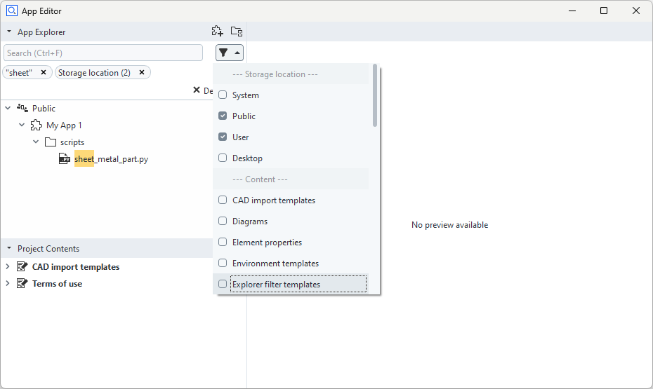

Using the App Editor
With the App Editor, you write Python scripts, add/remove contents, create/edit, export and publish Apps.
See the ZEISS Quality Tech Guide article App Editor for more details.
App Editor Layout

App Explorer
The App Explorer shows all installed Apps. The professional version of ZEISS INSPECT already provides some system Apps which you cannot delete or modify.
Install additional Apps with one of the following methods:
Open the “Install/Uninstall Apps” dialog from the main menu
By drag&drop into the App Explorer
By RMB ► Import App… in the App Explorer
By using the ZEISS Quality Software Store
Apps can be installed in the User folder or in the Public folder. Additionally, external folders can be connected.
Project Contents
The Project Contents section contains all items in your active project, e.g. templates, report styles etc. Add these items by dragging and dropping them to your App in the App Explorer. You can copy or move contents between the Project Contents section and your App or between Apps.
Preview / Editor
The Preview / Editor section shows the contents of a file depending on its file type. If the selected App is in editing mode, App properties or script contents can be edited here.
Creating a new App
Create a new App in the following ways:
By using the “Create App” button in the top-right corner of the App Explorer
By using RMB ► Create App on the Public folder or the User folder
By using RMB ► Create App on a connected external folder
A newly created App has the default title “My App”. Rename your App in the properties dialog on the right. A blue dot next to the App title indicates that the App is in editing mode.
An new App has a set of default folders and files.
Default Folders and Files of an App

Entering and Leaving Editing Mode
Before you can modify an installed App, you must set it to editing mode first. A newly created App is already in editing mode.
Set an App to editing mode
By using RMB ► Edit on the App root node in the App Explorer or
By clicking the Edit App button in the App properties window.
A blue dot next to the App title indicates that the App is in editing mode.
When you have finished editing the App, you can leave the editing mode
By using RMB ► Finalize App on the App’s root node in the App Explorer or
By clicking the Finalize App button in the App properties window.
Note
An App can only be finalized after all mandatory information has been entered in the App properties dialog.
Writing Python Scripts
New Folder or Script
Click RMB on the ‘scripts’ folder of an App (in editing mode) ► New Folder/Script
Installing Python Packages
Python packages can be installed into an App. The installed Python packages are only available to scripts in this specific App. This concept is like in Conda or VirtualEnv. If you click RMB on the ‘scripts’ folder or ‘modules’ folder and select ► Install Python Packages…, the dialog for the installation is shown.
From network The package list from network must be separated with a comma. To install the packages of a specific version, write the version after “==”, e.g.
numpy==1.22.0
From local file system Python wheel files (*.whl) can be added or removed.
Running Python Scripts
You start or stop script execution with the buttons in the top right corner of the Script Editor.
Recording Commands
You start or stop recording of commands executed in ZEISS INSPECT by using the Record button in the top right corner of the Script Editor. The recorded commands can be edited afterwards.
Inserting Element Values
You insert objects from ZEISS INSPECT into your Python script by using RMB ► Insert ► Element Value in the script editor.
Inserting a File Selection Dialog
You insert a file selection dialog in your Python script by using RMB ► Insert ► File… in the script editor. See Selecting a file or folder for details.
Adding, Moving and Copying Contents
A project must be opened to provide items in the Project Contents section. An App must be in editing mode to allow adding or removing contents. You copy or move contents between the Project Contents section and an App or between two Apps by drag&drop. You remove content from an App with RMB ► Delete… Based on the content types, the App folder structure is maintained automatically.

Searching and Filtering

To ease working with a large number of installed Apps, searching and filtering can be used. The search function allows to enter parts of a file name. The search keyword can then be applied as a filter. An additional function allows to filter by storage location and content type.
Exporting an App
Click RMB on the installed App ► Export: Save the selected App as a .addon file.
Apps from External Folders
Connecting and Disconnecting External Folders

External Folder enables the user to run scripts from a selected path. More than one external folders can be added.
Connecting
Click RMB in an area of the App Explorer where no object is selected ► Connect External Folder…
Disconnecting
Click RMB on the external folder you want to delete ► Disconnect…
The External Folder is removed from the App Explorer but its contents remain in the file system.
Creating Apps in External Folders
Creating a new App in an external folder
Click RMB on the External Folder ► New App
“Finalize App” is not available for Apps from external folders, however they can be published, although they are considered still to be work in progress.